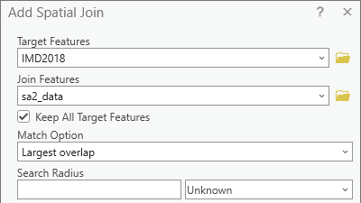
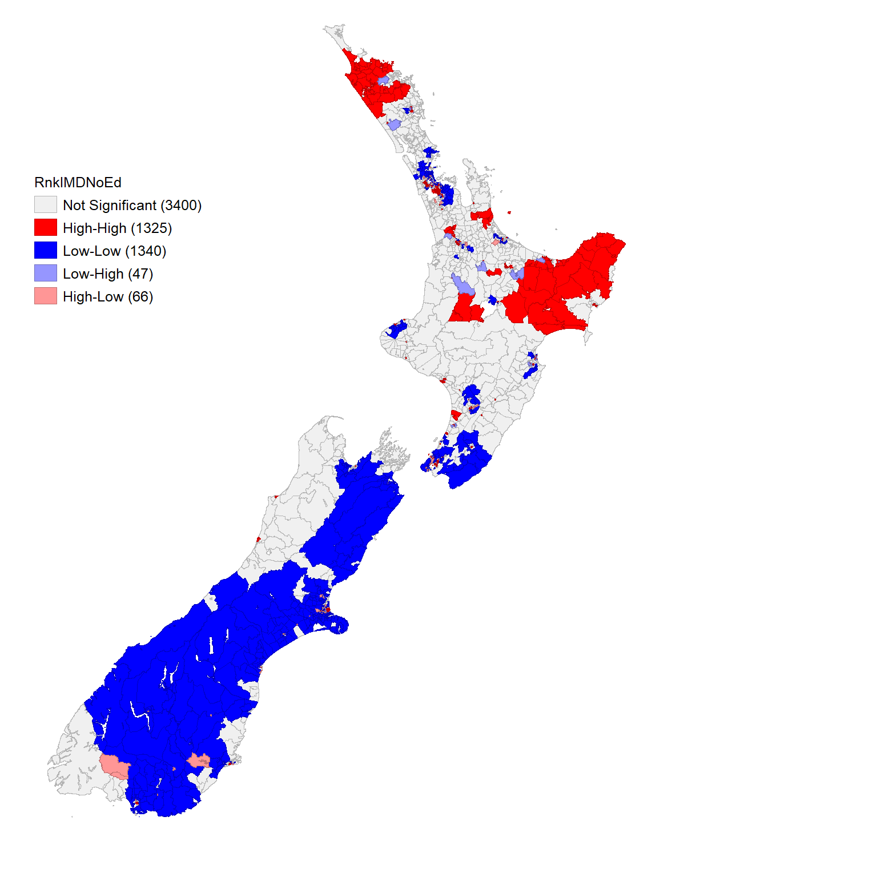
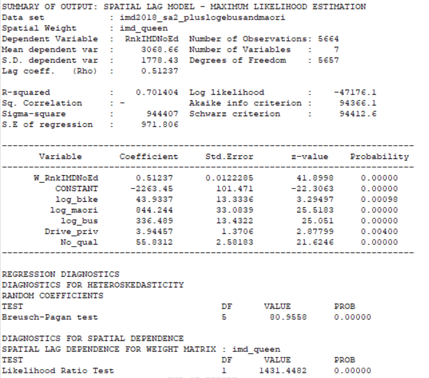
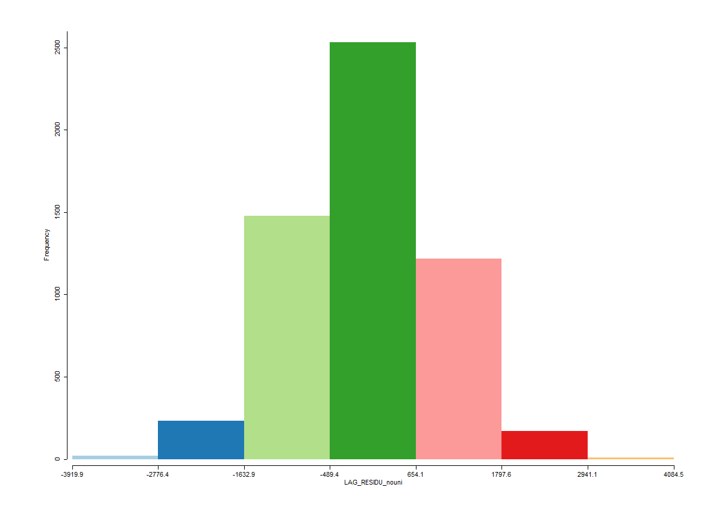
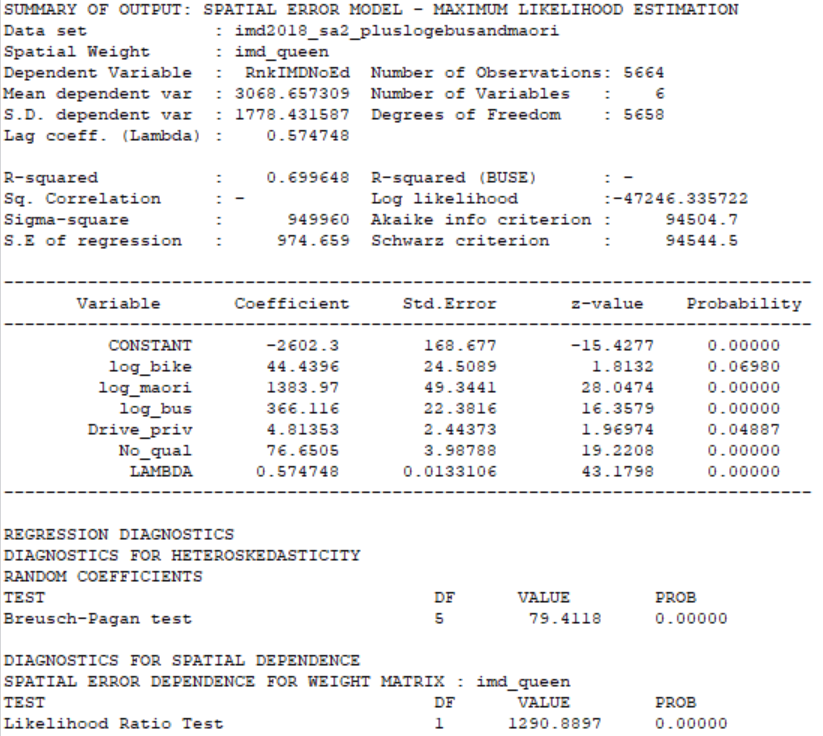
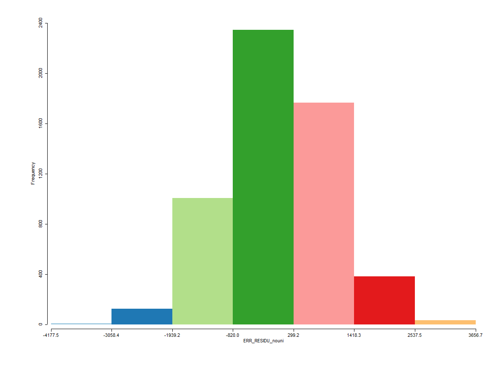

A geographical statistical approach to the 2018 New Zealand Index of Multiple Deprevation
GEOG 351: Quantitative Analysis
Alice Clauss (260945446)
Stages
Background
Methods
Results
Discussion
Background
Background: Data
My project focuses on the New Zealand Index of Multiple Deprivation (IMD), which was created in 2013 and updated in 2018, which is a ranking of deprivation by data zones in New Zealand (Exeter et al. 2018).
I also used data from the 2018 New Zealand Census at the statistical area two level, focusing on education qualifications, typical methods of travel to work, and Maori heritage (Stats NZ 2020).
Background: Index weighting
imd18 <- readxl::read_excel("IMD2018.xlsx", sheet ="IMD18") # Import datancol(imd18) # Number of columns
[1] 41
nrow(imd18) # Number of entries
[1] 6181
6180 entries (excluding the column names’ row)
these are at the different geographic level than census data
# Necessary for importing data nicelylibrary(tidyverse)# Importing and cleaning education dataeducation <-read_csv("2018-census-place-summaries-csv/2018-census-place-summaries-education-table2-2018-csv.csv") %>%filter(Area_type =="Statistical Area 2")education <- education %>%filter(Maori_ethnic_group_indicator_summary_description =="Total") %>%select(Year, Area_type, Area_code, Highest_qualification_description, Highest_qualification_percent) %>%pivot_wider(names_from = Highest_qualification_description, values_from = Highest_qualification_percent) %>%select(!c(`Not elsewhere included`, Total))# Importing and cleaning ethnicity dataethnicity <-read_csv("2018-census-place-summaries-csv/2018-census-place-summaries-ethnicity-table1-2018-csv.csv") %>%filter(Area_type =="Statistical Area 2")ethnicity <- ethnicity %>%select(Year, Area_type, Area_code, Maori_descent_description, Maori_descent_indicator_percent) %>%pivot_wider(names_from = Maori_descent_description, values_from = Maori_descent_indicator_percent) %>%select(!c(`Response unidentifiable`, `Not stated`, `Total`))# Cleaning transport data, spitting out the percentage of modes used for work, selecting SA2transport <-read_csv("2018-census-place-summaries-csv/2018-census-place-summaries-transport-table1-2018-csv.csv")transport <- transport %>%select(Year, Area_type, Area_code, `Main_means_of_travel_to_work_description`, `Main_means_of_travel_to_work_percent`) %>%pivot_wider(names_from =`Main_means_of_travel_to_work_description`, values_from =`Main_means_of_travel_to_work_percent`) %>%filter(Area_type =="Statistical Area 2") %>%select(!c(`Did not go to work today`, `Not elsewhere included`))# Binding the census data togethervars <-left_join(education, ethnicity, by ="Area_code") %>%left_join(., transport, by ="Area_code")vars <- vars %>%select(!c(Year, Year.y, Area_type.y, Area_type.x, Area_type)) %>%rename(`Total Education`=`Total stated.x`,`Year`= Year.x,`Total Ethnicity`=`Total stated.y`,`Total Transport`=`Total stated` )# Creating groupings for educationvars <- vars %>%mutate(Secondary =as.numeric(`Level 1 certificate`) +as.numeric(`Level 2 certificate`) +as.numeric(`Level 3 certificate`) +as.numeric(`Overseas secondary school qualification`),`Some University`=as.numeric(`Level 4 certificate`) +as.numeric(`Level 5 diploma`) +as.numeric(`Level 6 diploma`),Tertiary =as.numeric(`Bachelor's degree and level 7 qualification`) +as.numeric(`Post-graduate and honours degrees`),`Post-tertiary`=as.numeric(`Master's degree`) +as.numeric(`Doctorate degree`),`Any University`=as.numeric(`Level 4 certificate`) +as.numeric(`Level 5 diploma`) +as.numeric(`Bachelor's degree and level 7 qualification`) +as.numeric(`Post-graduate and honours degrees`) +as.numeric(`Master's degree`) +as.numeric(`Doctorate degree`) ) %>%select(!c(`Level 1 certificate`, `Level 2 certificate`, `Level 3 certificate`,`Level 4 certificate`, `Level 5 diploma`, `Level 6 diploma`,`Bachelor's degree and level 7 qualification`, `Post-graduate and honours degrees`,`Master's degree`, `Doctorate degree`))
Background: Census wrangling
And this is where a lot of problems that have been building come to a head.
2013 Census Areas \(=\) 2013 IMD Data zones
2018 Statistical Area 2 \(\neq\) 2018 IMD Data zones
2018 Statistical Area 2 \(<\) 2018 IMD Data zones
Background: Census wrangling
Imported SA2 Boundaries, census data, and IMD18 data to ArcGIS Pro
Education, Ethnicity, and Transport data was joined to the SA2 Boundaries
Using a spatial join (greatest overlap), census data was joined to the IMD18 data.

Methods
Methods: Ordinal data
The IMD is a form of ordinal level data. Each data zone is ranked 1:6181, with a rank of 1 indicating the lowest deprivation and 6181 the highest. Thus, to investigate the data I primarily used methods that accepted ordinal data but did use it in a linear regression.
Methods: Hypotheses
There will be greater deprivation with less education qualifications
And the inverse, that there will be less deprivation with more education qualifications
There will be less deprivation with greater private car and bicycle use
There will be more deprivation with greater bus use
There will be greater deprivation in areas of greater Maori ethnicity
Methods: Variables
To avoid an inherent correlation between the predictors and the response variable, I chose to use the Index of Multiple Deprivation that excludes education data.
Response
RnkIMDNoEdu: Ranked index of multiple deprivation that was made without education data.
Predictors
No_qual: % of people with no proof of education
AnyUni: % of people who have any university education
Master_: % of people with post-bachelor’s education
Maori: % of people with Maori heritage
Drive_priv: % of people who drive their own vehicle to work
Bus: % of people who take the bus to work
Bike: % of people who bike to work
Methods: Normality
Methods: Transformations
Methods: Analysis
Spearman Correlation
ordinal test for correlation within data, ranging from 1 (positively correlated) to -1 (negatively correlated)
Moran’s I
Test for spatial correlation of the data (run on the response variable)
Linear Regression
Requires independence of variables, normality of residuals, and homoscedasticity of residuals,.
Spatial Lag Regression with Queen weighting
Spatial Error Regression with Queen weighting
Results
Results: Spearman Correlation
Pearson correlation coefficients, which range from \(1:-1\).
The significance level of each Spearman correlation is notated at the bottom.
Methods: Global Monran’s I
Methods: Local Monran’s I

Results: Multiple Linear Regression
Results: Assumptions of Multiple Linear Regression
Results: Spatial Lag Linear Regression


Results: Spatial Error Linear Regression


Works cited
Exeter, Daniel John, Arier Chi Lun Lee, Jinfeng Zhao, Sue Crengle, Annie Chiang, and Michael Browne. 2018. “2018 Index of Multiple Deprivation.”https://hgd.auckland.ac.nz/imd18/.